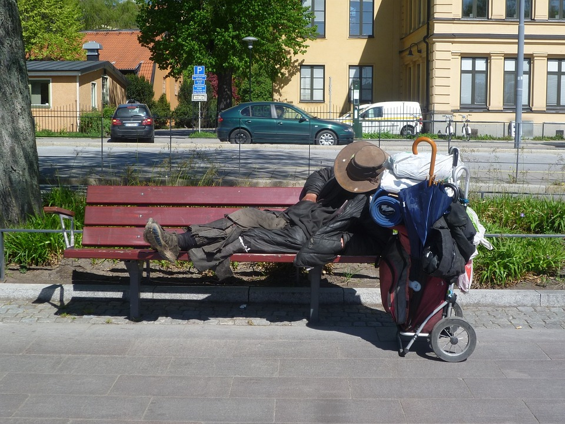

Existem diversas soluções que podem ajudar a melhorar a situação dos moradores de rua em Maringá. Algumas possíveis soluções incluem:
1. Fornecer abrigos e moradias adequadas: É importante que os moradores de rua tenham acesso a abrigos e moradias adequadas que ofereçam segurança e privacidade. Esses abrigos devem incluir acesso a banheiros e chuveiros, bem como assistência para encontrar empregos e programas de treinamento.
2. Oferecer assistência financeira e de emprego: Muitos moradores de rua em Maringá precisam de ajuda para encontrar trabalho e obter renda suficiente para se sustentar. Programas que fornecem assistência financeira, treinamento profissional e ajuda para encontrar emprego podem ser úteis nesse sentido.
3. Proporcionar serviços de saúde adequados: É fundamental que os moradores de rua em Maringá tenham acesso a cuidados médicos adequados para prevenir e tratar doenças. Clínicas de saúde móveis e programas que oferecem tratamento para transtornos mentais e dependência química podem ser úteis.
4. Sensibilização e Educação: A sociedade como um todo precisa de educação e sensibilização sobre a situação dos moradores de rua em Maringá. Campanhas de conscientização e programas educacionais podem ajudar a reduzir o estigma e a discriminação, e incentivar as pessoas a oferecer ajuda e apoio.
5. Fortalecer parcerias com organizações e grupos comunitários: Trabalhar em colaboração com organizações e grupos comunitários locais pode ser uma estratégia eficaz para fornecer serviços e recursos para moradores de rua em Maringá. Essas parcerias podem ajudar a fornecer abrigos, assistência financeira, cuidados médicos e outros serviços essenciais para essa população vulnerável.
